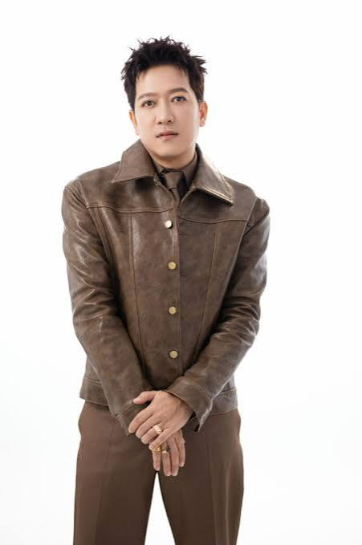
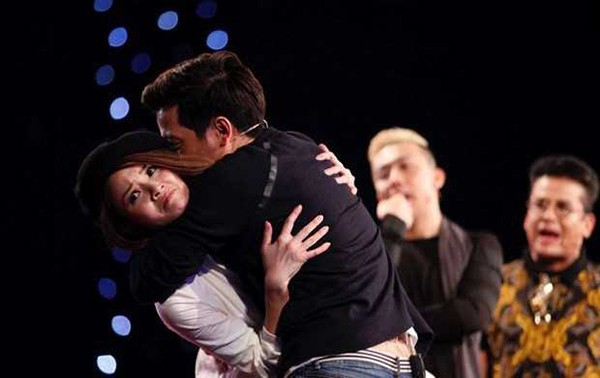
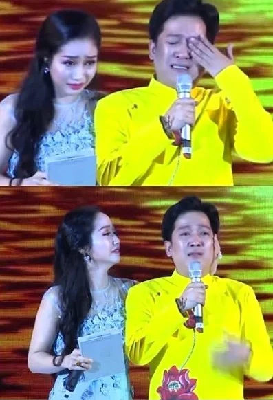

Sân khấu hài
Đây là một trong những không gian gắn liền với hình ảnh Trường Giang, nơi lối diễn gần gũi và nhịp gây cười được thể hiện trực tiếp trước khán giả.
The culture & entertainment journal
Một gương mặt quen thuộc, nhiều câu chuyện phía sau ánh đèn
Celebrity profile · Special edition
Có những nghệ sĩ được nhớ đến bởi một vai diễn, một chương trình, hoặc đơn giản là bởi phong cách xuất hiện không dễ nhầm lẫn. Chuyên đề lần này nhìn lại hành trình của Trường Giang qua những lát cắt quen thuộc trên sân khấu và truyền hình.

Trường Giang là gương mặt quen thuộc với khán giả qua nhiều hoạt động hài kịch, điện ảnh và chương trình truyền hình.
Trên hành trình hoạt động nghệ thuật, anh xây dựng hình ảnh gắn với lối diễn hài gần gũi, cách trò chuyện đời thường và khả năng tạo không khí trong các chương trình giải trí. Sự thân thuộc ấy giúp khán giả dễ dàng nhận ra anh giữa một thị trường có rất nhiều gương mặt và phong cách khác nhau.
Một nghệ sĩ hoạt động lâu năm thường được nhìn nhận qua nhiều vai trò: người biểu diễn, người dẫn dắt câu chuyện và cả nhân vật tạo nên những khoảnh khắc được bàn luận. Với Trường Giang, mỗi vai trò lại đem đến một góc nhìn riêng.
Sự nghiệp của một nghệ sĩ giải trí không chỉ được tạo nên bởi một lần xuất hiện nổi bật. Đó còn là quá trình thử sức ở nhiều định dạng khác nhau, từ sân khấu trực tiếp đến phim ảnh và chương trình truyền hình.
Đây là một trong những không gian gắn liền với hình ảnh Trường Giang, nơi lối diễn gần gũi và nhịp gây cười được thể hiện trực tiếp trước khán giả.
Việc tham gia các dự án phim mở rộng phạm vi hoạt động của anh, đồng thời đặt ra yêu cầu khác với diễn xuất trên sân khấu.
Các chương trình giải trí đưa hình ảnh nghệ sĩ đến gần khán giả qua những cuộc trò chuyện, thử thách và tình huống không hoàn toàn được sắp đặt trước.

Trong chương trình giải trí, người biểu diễn không chỉ truyền tải lời thoại. Họ còn phải quan sát phản ứng của khán giả, điều chỉnh nhịp độ và tìm cách giữ sự chú ý trong suốt phần xuất hiện của mình.
Trường Giang thường tạo dấu ấn bằng cách trò chuyện tự nhiên, sử dụng biểu cảm và đưa những tình huống đời thường vào phần thể hiện. Đây là kiểu phong cách có ưu điểm là dễ tiếp cận, nhưng cũng khiến từng khoảnh khắc trên sân khấu dễ trở thành chủ đề để khán giả nhận xét và tranh luận.
Sau cùng, sức hấp dẫn của một tiết mục không chỉ nằm ở việc nghệ sĩ nói bao nhiêu, mà còn ở việc khán giả nhớ điều gì sau khi tiết mục kết thúc.

“Có người bước lên sân khấu để kể một câu chuyện. Có người khiến khán giả còn tiếp tục bàn luận về câu chuyện ấy sau khi ánh đèn đã tắt.”
Trong ngành giải trí, được chú ý đã là một lợi thế; duy trì sự chú ý lại là một câu chuyện hoàn toàn khác. Một nghệ sĩ có cá tính rõ ràng thường dễ được nhận diện, nhưng cá tính ấy cũng đồng nghĩa với việc mỗi lần xuất hiện đều có thể trở thành chủ đề để công chúng đánh giá.
Trường Giang là ví dụ thú vị cho điều đó. Sự hoạt ngôn, gần gũi và chủ động trong giao tiếp góp phần tạo nên hình ảnh quen thuộc của anh. Dĩ nhiên, ranh giới giữa tự tin và xuất hiện hơi nhiều đôi khi mỏng hơn người ta tưởng. Khán giả có thể thích một người biết khuấy động không khí, nhưng vẫn luôn dành quyền quyết định xem khoảnh khắc nào thật sự đáng nhớ.
Có lẽ đó cũng là điều thú vị của nghề biểu diễn: nghệ sĩ có thể chuẩn bị lời thoại, ánh sáng và cách bước ra sân khấu, nhưng phản ứng cuối cùng vẫn thuộc về khán giả. Spotlight có thể được bật lên, còn việc giữ nó bao lâu thì không ai quyết định một mình được.
Đây là góc nhìn bình luận về hình ảnh công chúng và phong cách biểu diễn, không phải kết luận về đời tư hay con người ngoài sân khấu của nghệ sĩ.
Bạn có thể tham khảo thêm thông tin tổng quan về nghệ sĩ tại trang thông tin Trường Giang trên Wikipedia .